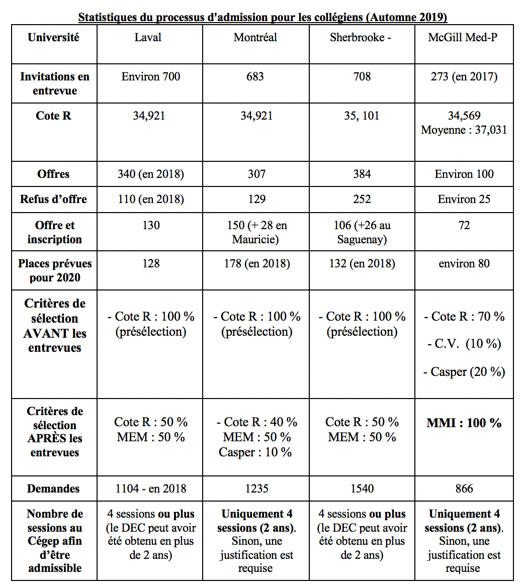

Secondaire
Cours préalables
- Mathématiques SN ou TS de la 5e secondaire ou 068-536 ou l'équivalent
- Physique 5e secondaire ou 054-534 ou 584 ou l'équivalent
- Chimie 5e secondaire ou 051-534 ou 584 ou l'équivalent
Conseils
- C’est important de choisir les cours de mathématiques et de sciences avancés en secondaire 4 qui permettent d’accéder aux cours de secondaire 5.
- Les notes de secondaire 4 et secondaire 5 (étapes 1 et 2) seront considérées par les cégeps. Donc, il faut tenir compte des moyennes à obtenir afin d’accéder au programme du cégep qui t’intéresse. En effet, les programmes de sciences naturelles et Sciences, Lettres et Arts se remplissent souvent lors du premier tour de demandes au Cégep.
Cégep
Introduction
La première étape de sélection pour la médecine, ainsi que pour tous les programmes universitaires contingentés, est la cote de rendement au collégial (Cote R). Ainsi, tout au long du Cégep, la première chose à faire afin de s'offrir la meilleure des chances d’accéder à la médecine est de bien étudier et réussir les cours au meilleur de nos habiletés personnelles. Ensuite, les comités d’admission tiennent compte non seulement du rendement scolaire, mais également des qualités non-académiques des candidats comme la compassion, l’empathie, la bienveillance, l’intégrité, la gestion du stress, etc. Le référentiel des CanMEDS être un outil précieux afin de comprendre quelles compétences et qualités les programmes recherchent chez leurs candidats. Ces compétences seront évaluées par l’entremise des entrevues de forme mini-entrevues multiples (MEM), du test CASPER en ligne et, parfois, du curriculum vitae.
Programmes menant à une admissibilité au doctorat de médecine
- Un DEC en sciences, lettres et arts
- Un DEC en sciences de la nature et avoir atteint des objectifs 00XU (biologie) et 00XV (chimie)
- Un autre diplôme d’études collégiales (DEC) décerné par le ministère de l’Éducation et de l’Enseignement supérieur, et avoir réussi, avant l’entrée dans le programme, les cours préalables suivants :
- Biologie 301 et 401 ou deux cours de biologie humaine
- Chimie 101, 201 et 202
- Mathématiques 103 et 203
- Physique 101, 201 et 301
- Un diplôme d’études postsecondaires reconnu par l’Université comme équivalent à un DEC ou à un baccalauréat universitaire obtenus au Québec, et avoir réussi les cours préalables ci-dessus mentionnés ou des cours jugés équivalents dans chacune des quatre matières.
- Un diplôme de premier cycle universitaire reconnu équivalent à un baccalauréat et avoir réussi les cours préalables ci-dessus mentionnés ou des cours équivalents dans chacune des quatre disciplines.
- Un diplôme de doctorat en médecine décerné par une faculté de médecine reconnue par le Conseil médical du Canada et avoir réussi l’examen d’évaluation du Conseil médical du Canada (EECMC).
Cote R
La cote de rendement au collégial (cote R) est une mesure commune d’évaluation du rendement des étudiants au collégial.
- Tous les cours entrent dans le calcul de la cote R sauf les cours de mise à niveau.
- La pondération s’effectue à partir du nombre d’unités propres à chaque cours.
Statistiques du processus d'admission pour les collégiens (Automne 2019)

Université
Frais d’admission
- Demandes d’admission : environ 100$ par universitè francophone
- 125$ par université pour les entrevues MEM Ainsi, 375$ pour les trois écoles
- $160.12 pour les frais d’admission à l’Université Mcgill
- Frais d’hôtels possiblement à prévoir. Nous vous recommandons fortement d’arriver la veille afin de faire l’entrevue à tête reposée, si celle-ci se déroule le matin.
Frais de scolarité approximatifs
- approximativement 5000$ par année à l’Université Laval
- approximativement 5000$ par année à l’Université de Sherbrooke
- approximativement 6500$ par année à l’Université de Montréal
- Université McGill
- Année Med-P: 4,587.85$
- 1ere année de médecine: 7,780.38$
- 2e année de médecine: 6,628.38$
- 3e année de médecine: 6,671.26$
- 4e année de médecine: 5,027.03$
Particularités des programmes
Université Laval
- Il n’y a pas d’année préparatoire au doctorat en médecine (pré-med).
- Le programme est flexible.Les étudiants ont le choix entre trois cheminements de programme, soit en 4 ans, 4 ans ½ ou 5 ans.
-
Il y a des cours à option à effectuer dans n’importe quels sujets non liés à la médecine.
- Une partie des cours sont des cours magistraux et d’autres sont de type sous-groupes en apprentissage par problème.
- Les cours à l’Université Laval s’étendent le long des sessions universitaires standards, contrairement à plusieurs autres écoles qui fonctionnent par blocs. La méthode de l’Université Laval permet de faire les cours en longitudinal.
Université de Montréal
- 2 campus: Montréal et Mauricie
- Cheminement médecine-recherche possible : M.D.-M. Sc.ou M.D.-Ph. D.
Année préparatoire :
- Prérequis au programme MD (obligatoire pour les collégiens), à quelques exceptions près (pharmacie, physiothérapie, etc.)
- Cours magistraux
- Évaluation succès-échec
Préclinique
- Durée 2 ans
- Apprentissage de la médecine par système (cardiologie, neurologie, etc.)
- Séances d’apprentissage par problèmes (APPs) = discussions de cas cliniques en petits groupes avec un tuteur médecin
- Quelques cours magistraux en présentiel
- Cours IMC/ IDC = séances en milieu hospitalier une fois par semaine. Apprentissage du questionnaire médical, de l’examen physique et du processus de raisonnement clinique. Discussion d’enjeux éthiques
- CAAHC = centre de simulation médicale. Activités environ 1 fois par mois. Accès à des mannequins de haute qualité et acteurs professionnels
Externat
- Durée de 2 ans
- Option de faire l’externat centralisé dans un milieu (tous les stages obligatoires se font soit au CHUM, à Hôpital Maisonneuve-Rosemont ou à l’Hôpital Sacré-Coeur) ou usuel (ce choix offre la possibilité de choisir différents milieux de stages)
- CAAHC: activités de simulation en lien avec les stages
- 7 semaines campus: cours magistraux (pharmacologie, éthique, etc.) avec examens et/ou travaux à remettre
Université de Sherbrooke
- Il n’y a pas de pré-med et le programme se déroule en 4 ans.
- L’enseignement est en présentiel et en auto-apprentissage à la maison. Il est axé sur l’apprentissage par problème et l’apprentissage clinique. Il n’y a donc presque aucun cours magistral.
- L’approche par symptômes plutôt que par systèmes est une particularité à Sherbrooke.
- Le programme est axé sur l’auto-apprentissage :
- Les méthodes d’enseignement sont diversifiées et interactives notamment la méthode APP, soit l’Apprentissage Par Problème.
- Le matériel pédagogique est entièrement numérisé. Vous n’aurez aucun livre à acheter.
- L’immersion clinique débute dès le troisième mois de la première année de médecine.
- Les activités pédagogiques permettent de s’exposer très tôt à la clinique. Ainsi, il existe plusieurs opportunités de faire des consultations à l’urgence ou du bénévolats dans la communauté.
- Les étudiants ont accès à un médecin mentor qui les accompagne tout au long de leur parcours
- Les étudiants peuvent faire leur programme dans les trois sites suivants : Moncton, Saguenay et Sherbrooke
Université Mcgill
- Deux campus à partir de l’automne 2020 : Montréal et Gatineau.
- Une année préparatoire “Med-P” pour les étudiants admis après le CÉGEP. Environ 40% de la cohorte provient directement du CÉGEP.
- Pendant les premiers 1.5 ans de médecine, les cours magistraux sont offerts tous les matins et les séances d’apprentissage par problèmes sont offerts en après-midi pour consolider l’information.
- C’est l’école qui offre le plus d’exposition clinique puisque les étudiants passent 2.5 ans en milieu clinique.
- Le curriculum est séparé en trois parties (après l’année préparatoire) :
- La formation fondamentale en médecine et médecine dentaire pendant la 1ere année et les premiers six mois de la 2e année
- La transition vers la pratique clinique les six derniers mois de la 2e année
- L’externat en 3e et 4e année
- Les étudiants ont accès au centre de simulation médicale où les sessions sont simulés par des acteurs professionnels. Le centre contient une zone de simulation chirurgicale, des salles de rencontre clinique, des appareils à ultrason et autres.
- Les cours sont enseignés en anglais mais il y a plusieurs opportunités pour pratiquer la médecine en français : plusieurs interactions avec les patients dans les milieux cliniques se font en français, les sessions aux centre de simulation peuvent être faits en français, le club de français clinique offre des ateliers mensuels pour que les étudiants puissent pratiquer leur maîtrise du français clinique. La faculté offre aussi des cours de français hebdomadaires aux anglophones.
Et si tu ne rentres pas en médecine…
Rappel : Le bénévolat, qu’il soit à l’hôpital ou non, permet d’acquérir de l’expérience qui servira lors des prochains MEM. Le plus d’expérience vous avez, le mieux c’est! Par exemple, profitez de ce temps pour faire de l’observation avec un médecin. Comment faire? Rechercher, en ligne ou avec des contacts personnels, afin de trouver un médecin oeuvrant dans une discipline qui t’intéresse et les contacter. Vous pouvez demander à vos médecins de famille !
Voici quelques options qui s’offrent à toi
- Année sabatique
Opportunité de voyager, de travailler, de partir un projet…
- Belle opportunité d'améliorer son expérience de travail. Comme s’impliquer dans des projets de recherches ou travailler dans un centre médical. Vous pourriez aussi travailler comme assistant de recherche. Un astuce est de commencer par chercher des emplois à travers les banques d’emplois de vos écoles.
- Cette option s’applique seulement aux gens ayant des résultats scolaires qui demeureront compétitif l’année suivante.
- Aller à l’université
Choisir un programme connexe que vous aimez. Il faut être prêt à possiblement rester dans ce programme. Voici quelques exemples.
- Anatomy and cell biology à Mcgill
- Physiothérapie/ Ergothérapie
- Pharmacie
- Psychologie
Foire aux questions sur les programmes universitaires
Est-ce que mon choix de programme universitaire peut influencer mes chances d’admission en médecine ?
- Tout d’abord, il faut comprendre que chaque programme universitaire suit un barème de notation littérale (D à A+) qui sera par la suite converti sur 4,33, soit par exemple 4,33 = A+ = 90% et +. Mais comment comparer 2 personnes de 2 programmes différents avec une moyenne générale de 4,33 (A+)?
- Pour pouvoir comparer les programmes entre eux, les universités utilisent une cote de rendement universitaire comme outil de comparaison. La cote de rendement universitaire (CRU) est une conversion du GPA en une cote R qui tient en compte « l’indice de force du programme ». Par exemple, un 4,0 GPA en physiothérapie ne donnerait pas une même cote R qu’un 4,0 en psychologie (ex fictif : 37 versus 33 de cote R).
- Ainsi, certains programmes ont de bons indices de force de programme, et par conséquent permet un plus grand nombre de personnes d’atteindre la côte de rendement nécessaire pour pouvoir être convoqué aux entrevues de médecine !
Comment connaître l’indice de force d’un programme afin de faire un choix éclairé?
Université Laval
- L’université offre un étalon qui regroupe les cotes de rendement de chacun de leur programme selon les notes obtenues. Cet étalon s’applique uniquement à l’Université Laval. Par exemple, si tu finis avec un 4,0 en sciences biomédicales, cela équivaudrait à 32,872 versus 4,0 en psycho = 30,383 pour l’admission en automne 2020. Donc, si tu es dans un bac en sciences biomédicales à l’université de Montréal et que tu appliques avec un GPA de 4,0 en médecine à l’Ulaval, ta cote R attribuée sera comme mentionnée ci-haut.
- Habituellement les cotes accordées par l’Université de Montréal ont tendance à être supérieures qu’à Ulaval pour un même programme. Par exemple, 2 années de kinésiologie avec un GPA de 4,26 équivalait ~35,77, tandis que l’Université de Montréal ont évalué la cote à 36,387.
- Voici l’étalon de cote r selon le programme offert par Ulaval (année 2020) : Click here
UdeM
- Il n’y a pas moyen de connaître l’indice de force d’emblée, mais sur le site de l’udem (lien ci-dessous), il donne la possibilité aux étudiants de demander leur cote de rendement suite à un refus de d’admission seulement ! Si votre cote R du cégep était vraiment basse, après 1 an d’université, c’est pertinent selon moi d’appliquer dans un programme comme médecine, sachant que le refus soit inévitable, car cela permet de voir l’évolution de la cote R du cégep après 1 première session universitaire et éventuellement pour le reste du parcours universitaire si nécessaire.
- Voici le lien pour faire la demande de cote :
Click here
- Sélectionner dans Nature de la demande : Questions relatives à l’admission
- Sélectionner dans sujet : Demander sa cote de rendement
Après avoir commencé l’université, est-ce que ma cote R du cégep comptera encore?
- D’une part, il est important de savoir que l’université fonctionne avec le système de GPA/cote, soit une cote qui va jusqu’à 4,33 pour toutes les universités sauf Mcgill (4,0). Chaque GPA est transformé en cote de rendement (cote r) universitaire soit une version de la côte r du cégep. Ce calcul prend en considération « l’indice de force d’un programme » et permet de comparer les programmes entre eux. Par exemple, un 4,0 en biochimie pourrait donner 33 de cote r universitaire et un 4,0 en physiothérapie 36 de cote r universitaire, d’où l’importance de choisir un programme qui nous permet d’atteindre une bonne cote r.
- D’autre part, à l’université, chaque crédit universitaire effectué diminue de 2% la proportion accordé à ta cote r du cégep. Donc si on prend exemple d’une session typique de 15 crédits à l’université en physiothérapie avec une moyenne de 4,0. 15 crédits x 2 % = 30% accordé à ta cote r universitaire et 70% à ta cote r du cégep. Exemple fictif : tu avais 31 au cégep, et maintenant 4,0 en physio te donnerait 36 selon le calcul de l’université, donc ta cote r final (cégep + uni) pour l’admission sera de 32,5 après une session universitaire !
Est-ce qu’il est possible d’effacer ma cote r ?
- Après 50 crédits universitaires, Les notes universitaires comptent pour 100% (50 x 2% = 100%) de ton dossier. En général, 50 crédits sont atteignables avec minimum 3 sessions universitaires soient 1 an et demi. Donc, si tu as une cote r collégiale assez faible, il te faudrait 2 ans au minimum afin d’effacer complètement ton cégep si cela ne s’était pas bien passé ! 1 an pour ceux qui sont déjà assez proches (par exemple 32,5 - 34 de cote r au cégep)
Particularités de l’admission à l’Université de Sherbrooke
- Sherbrooke considère des universitaires avec moins de 45 crédits (44 et moins) comme étant dans la catégorie collégial et non universitaire.
- Comme nous avons pu voir plus haut, les cote r dans la catégorie/contingent universitaire ont tendance à être supérieure au contingent collégial et les places sont plus limitées aux universitaires.
- Considérant ce que j’ai dit plus haut, après 3 sessions universitaires, je vous suggère fortement de finir avec < 45 crédits, ce qui vous permettrait d’augmenter vos chances d’admission à l’UdeS.